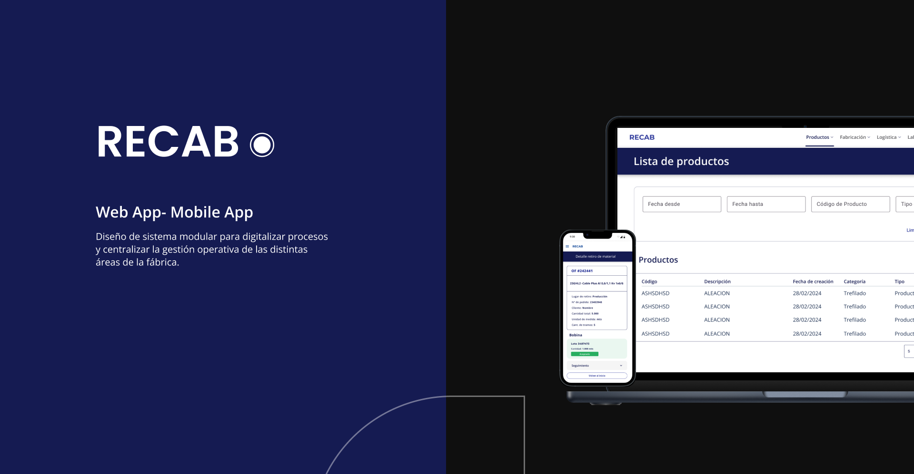
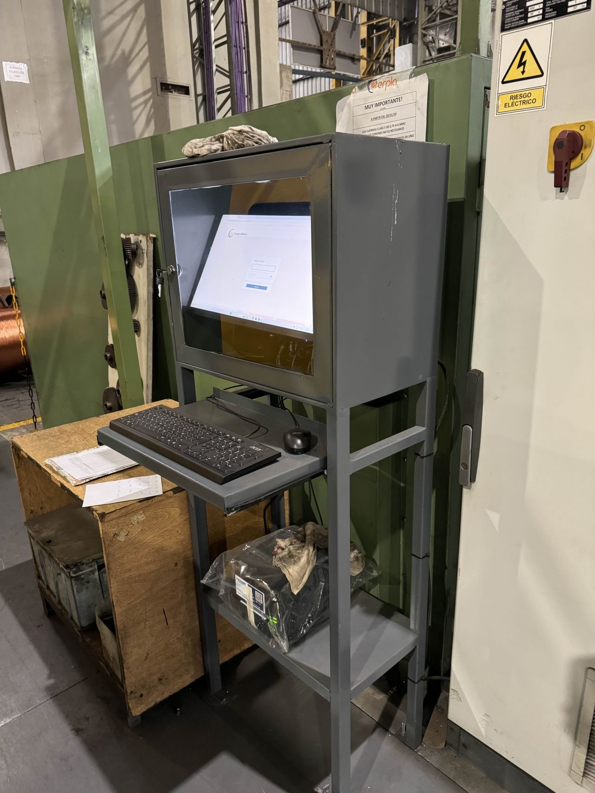
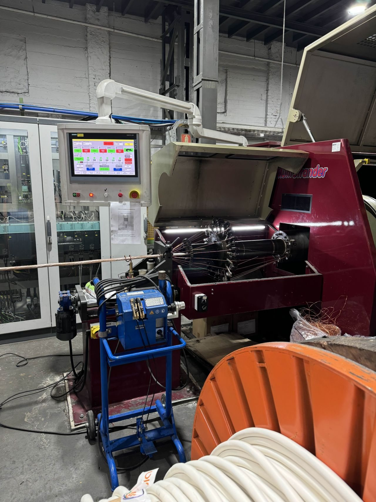
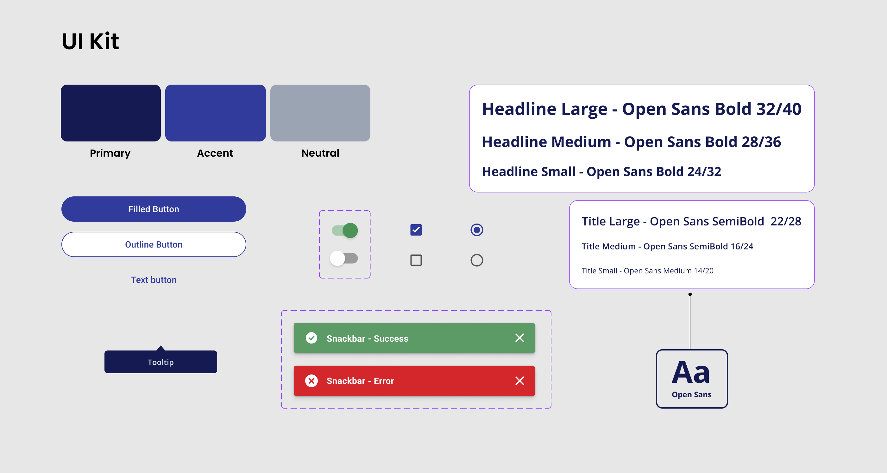
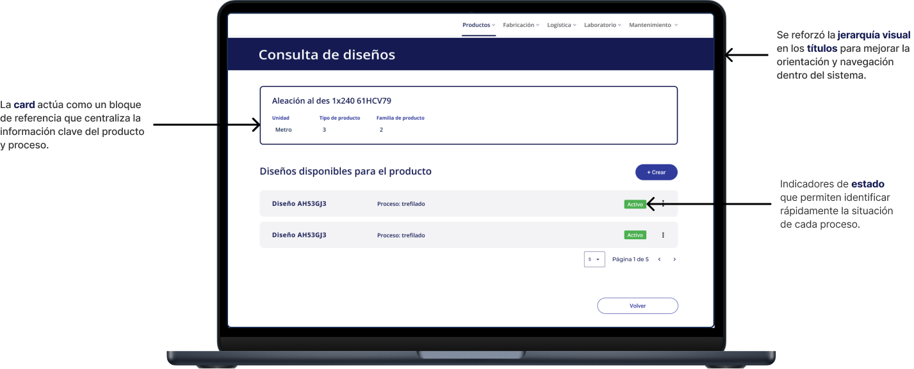
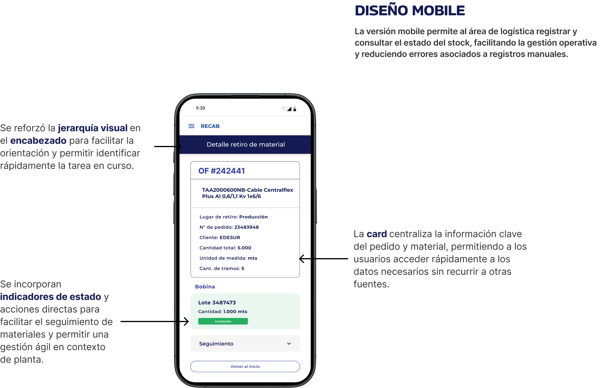

Contexto
Recab* es fábrica de conductores eléctricos, que abastece a distribuidores y obras públicas. En este contexto, participé en el diseño de una plataforma digital orientada a centralizar la información y mejorar la trazabilidad de los procesos, desde la fabricación hasta la entrega final. *Por razones de confidencialidad, el nombre de la empresa fue modificado.
Problema
La mayoría de los registros eran manuales, lo cual generaba errores frecuentes, retrabajo, mala comunicación y una falta de visibilidad sobre el estado de los procesos. Esto impactaba directamente en la eficiencia operativa y en la capacidad de cumplir con los tiempos de entrega.
Objetivo
Diseñar una plataforma que permita centralizar la información y mejorar la trazabilidad de los procesos operativos, facilitando la toma de decisiones y reduciendo errores.
Investigación
Se relevaron las distintas áreas de la empresa mediante instancias presenciales en planta y entrevistas remotas con stakeholders, con el objetivo de comprender sus flujos de trabajo y detectar oportunidades de mejora.
Insights
Cuello de botella en logística
Si bien inicialmente se percibía que los problemas se originaban en producción, el análisis reveló que logística era el principal cuello de botella, debido a la falta de integración y visibilidad en los procesos.
Diferentes niveles de madurez digital
Se identificaron distintos niveles de adopción y familiaridad con herramientas digitales entre los usuarios, lo que representaba una barrera para la implementación de una solución única.
Falta de comunicación y trazabilidad
La ausencia de trazabilidad en los procesos generaba problemas de comunicación entre áreas, dificultando la asignación de responsabilidades y la resolución de errores.
Principales desafíos
Facilitar la adopción del sistema en usuarios con baja madurez digital
Digitalizar procesos altamente manuales
Integrar áreas operativas en una única solución
Traducir flujos complejos a una experiencia digital eficiente
DECISIONES DE DISEÑO
Centralización de la información
Se diseñó un sistema de tareas que integra las distintas áreas, permitiendo visualizar y gestionar la información de forma centralizada.
Simplificación de flujos de trabajo
Se relevaron y reorganizaron los procesos existentes, reduciendo pasos innecesarios y adaptándolos a una lógica digital más eficiente.
Diseño orientado a la adopción
Se priorizó una interfaz clara e intuitiva, considerando los distintos niveles de madurez digital de los usuarios para facilitar el uso del sistema.
Mejora en la trazabilidad y comunicación
Se incorporaron estados y seguimiento de tareas, permitiendo mayor visibilidad entre áreas y una mejor asignación de responsabilidades.
Proceso y validación
Iteración de soluciones a partir de pruebas con usuarios
Se desarrollaron e iteraron prototipos de media y alta fidelidad, optimizando estructuras de información y flujos de navegación para tareas críticas.
Las propuestas fueron validadas con usuarios en planta mediante pruebas de usabilidad, ajustando la experiencia en base a los resultados obtenidos.



Solución
Una plataforma digital modular que centraliza la información de las distintas áreas de la empresa, permitiendo gestionar de forma integrada los procesos de producción, control de calidad y logística.
Para asegurar consistencia entre módulos y escalar la solución, se definió un UI KIT con componentes reutilizables.

Diseño desktop
Esta interfaz prioriza la visualización de información y el control de los procesos, facilitando la toma de decisiones y el seguimiento de pedidos.


RESULTADOS
Centralización de la información operativa
Reducción de errores en tareas diarias
Mayor trazabilidad en los procesos productivos
Mejora en la toma de decisiones a partir de indicadores
APRENDIZAJES
1
La complejidad operativa requiere soluciones que equilibren eficiencia y adopción por parte de los usuarios.
2
El research temprano es clave para alinear necesidades de negocio y experiencia de usuario.
3
Diseñar para entornos industriales implica priorizar claridad y funcionalidad sobre lo visual.